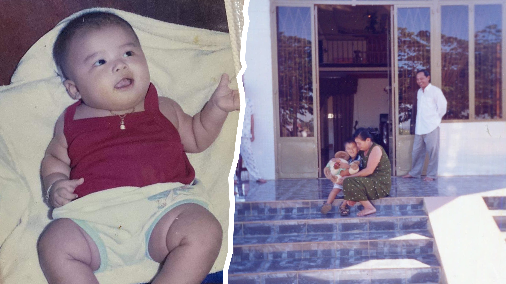
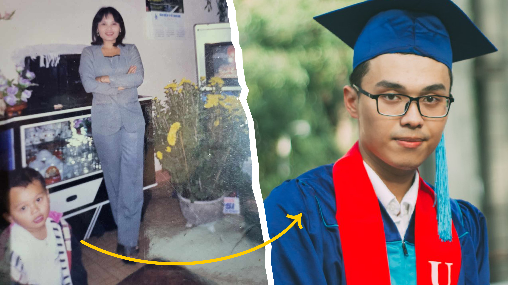

A Red Flag Designer 🇻🇳
with many Side Quests
(Too long to read? but hey, you might like me if you know me)
Remember my name
Chuong (Chương) is my name. Tough to pronounce if you didn't grow up Vietnamese — we're a tonal language with six tones, so I get it. I've thought about taking an English name, but it never quite feels like me.
Like most Vietnamese kids, I have a nickname from my grandma: Gôn. If you watch anime, you might know it from Hunter x Hunter. When I told my very first Canadian friend Emma about it, she said: "Do you know that's really cool?". Such an Otaku.
Chuong or Gôn. Either works. I'm happy with both.

Chuong, in the arms of his grandma who gave him the nickname "Gôn", and his grandpa. (Cette image est ici à la mémoire de mes chers grands-parents.)

Left: My mom and her little "definitely-not-a-doctor" baby. / Right: A Bachelor's in International Business who knew exactly that he wanted to be a UX designer.
Mom, I don't want to be a doctor!
Before UX, my (Asian) mom had a different plan for me — become a doctor, carry on the family tradition. Respectfully, no. Medicine wasn't my calling, and getting into medical school in Vietnam is no joke anyway.
So at 18, I applied to UEH University (flexing warning: one of the top universities in Vietnam) and majored in International Business — convincing myself I'd travel the world and enjoy the ride. Business intentions? Minimal.
Funny enough, healthcare is the domain I find myself most drawn to as a UX Designer. Maybe my mom was onto something — just in a different form.
Designer—that's what I want to be
I was a creative child. At 12, I was already shooting videos on my dad's compact camera and faking travel photos in Photoshop — convincing enough to fool people, at least. Business school came next, but the pull never left. I snuck design courses into my schedule, joined university clubs to practice, and in 2018 landed my first freelance gig as a Graphic Designer. I still remember how proud I felt. Then UX found me — or I found it. I loved how rational and layered it was, so I taught myself through books and the internet. Two months after graduating, I had my first UX role at Swag Soft Holdings.
Also, I want to be more than just a designer
As a member of the "human beings", I'm in love with beauty — the beauty of cinematic photography, and the beauty of languages.
As a human, I love challenges too, even if I'm not always thrilled when they show up. Some I choose, some find me. But what matters is that when they pass, I either learned something or won something. I push myself to stay adventurous, stay open to new experiences, and stay true to who I am. As I like to say, funnily enough, I'm a man of science, but I walk with faith.
And I feel blessed
"Those who are gentle with you deserve your gentleness back."
My grandma said that in the middle of one of our convos. I loved talking to her, never formally educated, but her philosophy on life was something else.
She knew I was a demanding child, and she worried that living that way would push people away. She wasn't wrong. But luckily I took her advice early enough, at least I think so. What she said that day became a part of me. I practice treating people with honesty, generosity, and tolerance.
And thanks to that, I've built many wonderful relationships, with people who give and receive true care, not just take from each other.
If you're my friend reading this, I always remember you in my prayers, even when I can't reach out.
And for all of that, I feel blessed.
Now you know.
In 2025, my resolutions were "challenge myself to do something uncomfortable every day" and "have the courage to ask for what I want." For 2026, I kept it simple: "Stay true to yourself."
I hope you feel like you know me a little now, but fair warning, I'm much more interesting than what I've just told you. I love tea, herbal and verbal. Get in touch and I'll spill more, so I can go from being "just another designer out there" to "Chuong, a designer or a friend you actually know."